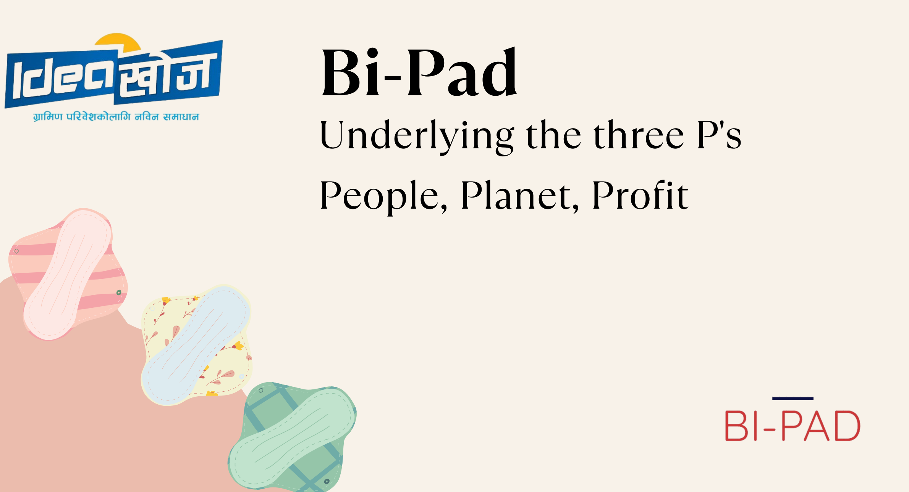
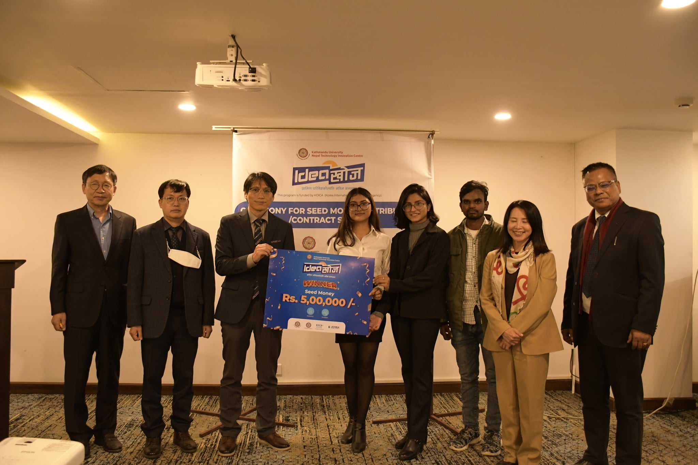

Project Bi-Pad: Women Empowerment and Beyond
About the Project
Project Bi-Pad was established in 2022 with a primary aim to provide women the freedom to have their periods in a safe, hygienic manner and to promote sustainability through empowerment. Bi-Pad is a biodegradable, reusable, and affordable sanitary pad — designed to be the best match for menstruating women in rural Nepal, where access to commercial hygiene products remains out of reach for most.

The Problem
Menstrual hygiene has long been a neglected issue in economically marginalised communities of Nepal. Women are bound to use non-sterile rags and mattress cuttings to manage their menstrual flow — not out of choice, but out of necessity and silence. The goal of this initiative was to break the taboo around menstruation, raise awareness, and make reusable hygienic sanitary pads accessible specifically for rural women. Where women are generally denied ownership of property, control over assets, and the ability to earn outside income, Bi-Pad gives them the freedom to be independent and make their own choices.
Our Objectives
We create an environment for women to work, empowering them and helping them produce their own menstrual products. Through this, we bring sustainability into our approach — leading to women's empowerment through employment. Bi-Pad works to tackle the very issue of menstrual hygiene management by raising awareness about menstruation and promoting the use of green alternatives. Specifically, we aimed to:
- Provide user-friendly, environment-friendly, reusable sanitary pads at affordable prices.
- Increase awareness among girls and women on menstrual hygiene and safe use of sanitary pads.
- Provide economic empowerment to rural women through training and awareness campaigns.
Check out our brochure
What I Learned
Running Bi-Pad working closely with women taught me that the most powerful interventions treat people as capable, not as recipients. Every woman who learned to make her own pad didn't just gain a hygienic product — she gained confidence, a skill, and a new way of thinking about her own body and rights. That quiet, personal shift felt like the real success of the project. I carry that lesson into everything I build now.